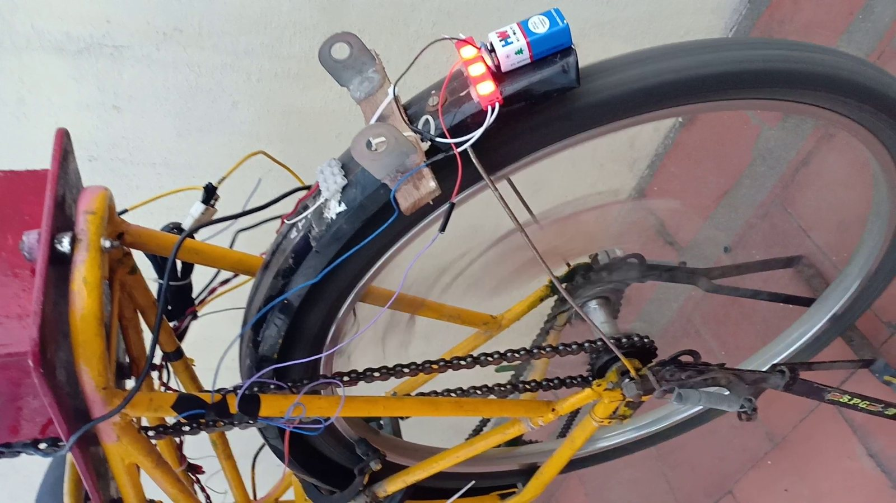

Why it matters
When we started, we put the price of an electric bicycle at about ₹50,000, and the ones we found only assisted pedalling. We wanted one that a school student could afford to build and that ran on its motor alone.
The idea
Convert an ordinary bicycle with a chain-driven motor, then keep rebuilding it. The second version added piezo transducers on the wheel to pick up force from the rolling tyre, and won the CBSE National Level Science Exhibition in 2018–19.
1Two versions
We built the first version in 2017–18 for a school science exhibition and kept working on it. The second version, The Fusion, is the one described here.
2What we built
The drive
The motor and the batteries sit in a metal case that we designed for the rear carrier. The motor turns the rear wheel through a chain that joins its gear to the freewheel. The batteries are 12 V sealed lead-acid units. The bicycle runs on the motor alone, and averaged 25 km/h.


The piezo wheel
A piezoelectric transducer produces a voltage when it is pressed. We mounted five on the wheel to pick up the force on the tyre as it rolls. Each one feeds its own Villard cascade, a diode-and-capacitor circuit that multiplies voltage, and the five outputs join in series at a power store.


Lights, indicators and the helmet
The indicators run from a two-pin relay and a double-pole switch. The brake light has no bought switch: two screws mounted near the rear brake touch when the brake is pulled and close the circuit. The helmet repeats the indicators and the brake light on its back, so that a driver behind can see them there as well.
We also made a wireless module for a glove that uses a piezo transducer for bone conduction, so that the rider can communicate while cycling.


An electrolysis chamber
The Fusion carried one experiment that had nothing to do with riding. We made an electrolysis chamber from a U-shaped PVC pipe with stainless-steel electrodes at each end, five sheets in parallel at the anode and three at the cathode, and sodium hydroxide dissolved in the water. The plan on our chart was to split water with electricity from the piezo wheel and burn the gas in an “electrolytic engine”.
3Results
| Measure | Value |
|---|---|
| Average speed on the motor | 25 km/h |
| Output of one good piezo transducer, pressed hard by hand | about 16 V |
| Cost of the build | ₹20,000 to 25,000 |
| Charging time we reported | 4 to 5 hours a week |
The Fusion won the CBSE Regional Level Science Exhibition at Velammal Vidyalaya on 24 and 25 January 2019, and then the National Level Science Exhibition in Noida on 8 and 9 February 2019.
We took the bicycle to Noida by train. On the first day, after two judges had seen it, we were demonstrating to visitors and started the motor with the wheel lock still on. That broke a couple of spokes. We repaired the wheel with adhesive and showed it again the next day.
4The limit it exposed
We never measured how much energy the wheel recovered. A reading of 16 V from a pressed transducer says little about power, because a piezo element delivers very little current. I now think the harvest was small next to what the motor drew, and the charging-time comparison on our chart was a claim with no test behind it.
The electrolytic engine has a harder problem. Splitting water takes more energy than burning the hydrogen returns, so the wheel could never have refuelled it.
Both ideas came back. In 2021, E-Metric redesigned the piezo wheel as a transducer inside a car tyre, with a mechanism and a calculation. The hydrogen went into Project Iron Man.
5After the nationals: a helmet that calls for help Class XI
In Class XI we extended the helmet. Three limit switches round the shell detect an impact, and two piezo sensors measure how hard it was. An Arduino sends this over Bluetooth to the rider's phone. The design was for the phone to call an ambulance and send the location to a number the rider had chosen.